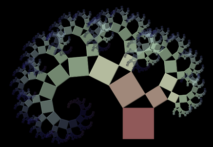

يصبح البريمج السابق أكثر تشويقاً إذا تم تكرار عملتي تشابه عوضاً عن واحدة.
هنا، تمت مطابقة الصورة الأصلية بطريقتين مختلفتين من خلال التشابه. وبنفس الطريقة، ستتم مطابقة الصورتان الناتجتان مما يولد أربع صور جديدة وهكذا دواليك. تعطي هذه العملية هياكل بشكل شجرة.
بتحريك النقط في البرنامج على اليمين، يمكن تغيير موقع الصور وبارامترات عمليات التشابه. من الممكن تغيير الصور بالنقر على الصور المصغرة.
|
 |
شجرة فيثاغورس: يظهر هذا النمط إذا تم إستخدام المربعين الصغيرين في رسم نظرية فيثاغورس كمربعين كبيرين لرسم جديد لهذه النظرية.